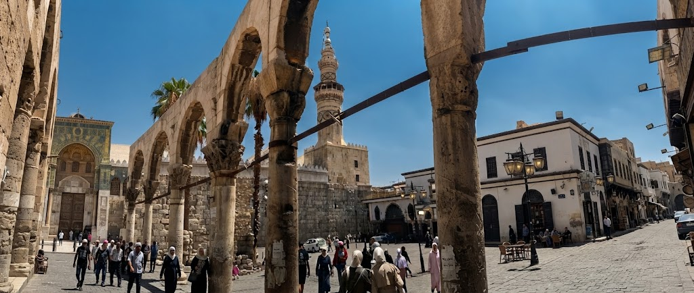

Hospitality
Sharing tea, coffee, and food is an important way many Syrian families welcome guests. Offering something to visitors is often a simple way to show kindness and respect.

02 / PEOPLE AND HISTORY
From historic buildings to music, crafts, and family traditions, Syrian culture reflects centuries of history and influences from different parts of the world.
Syria has a long history because of its location between the Mediterranean region and inland Asia. For thousands of years, people have travelled through the area for trade, migration, and cultural exchange. Today, historic buildings and ancient ruins show the influence of different periods, including the Roman, medieval, and Ottoman eras.
These historic places mean more than just architecture. They can be places of worship, learning, family memories, and community gatherings. Conflict has damaged many important landmarks, which makes protecting and documenting Syria's heritage especially important.

The Umayyad Mosque is one of Damascus's most recognizable historic landmarks.
Sharing tea, coffee, and food is an important way many Syrian families welcome guests. Offering something to visitors is often a simple way to show kindness and respect.
Syrian crafts include detailed woodwork, colourful textiles, metalwork, mosaics, and decorative stonework. These traditions reflect the skills of local artists and craftspeople.
Music, poetry, and storytelling help people share memories and pass traditions between generations. They also play an important role in celebrations and community life.
Arabic is Syria's official language, but several other languages are also spoken by communities across the country. These include Kurdish, Armenian, Syriac, Turkish, and others. Syria is also home to people from different religious backgrounds, including Muslim, Christian, Druze, and other communities.
There is no single way to describe every Syrian's experience. Food, dialects, celebrations, and family traditions can vary between cities and regions. Syrian communities living abroad also continue to share and preserve their culture around the world.
Explore Syrian food and regional flavoursTAKE A MOMENT TO LISTEN
I included this short ambient sound in my student project to add another element to the experience. It was created specifically for this website and is not a recording of traditional Syrian music.
Original ambient soundscape
Original audio created for this project.